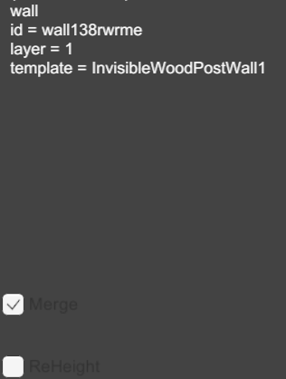
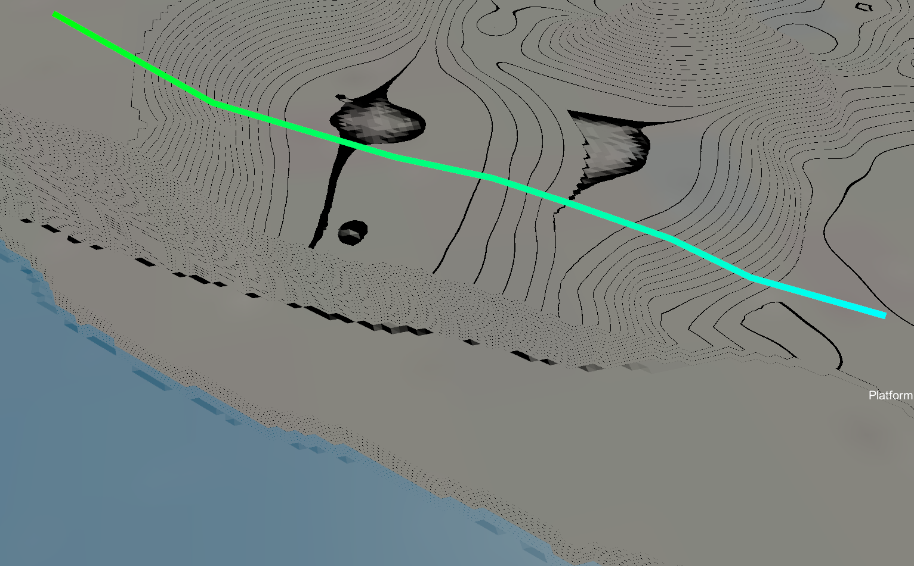
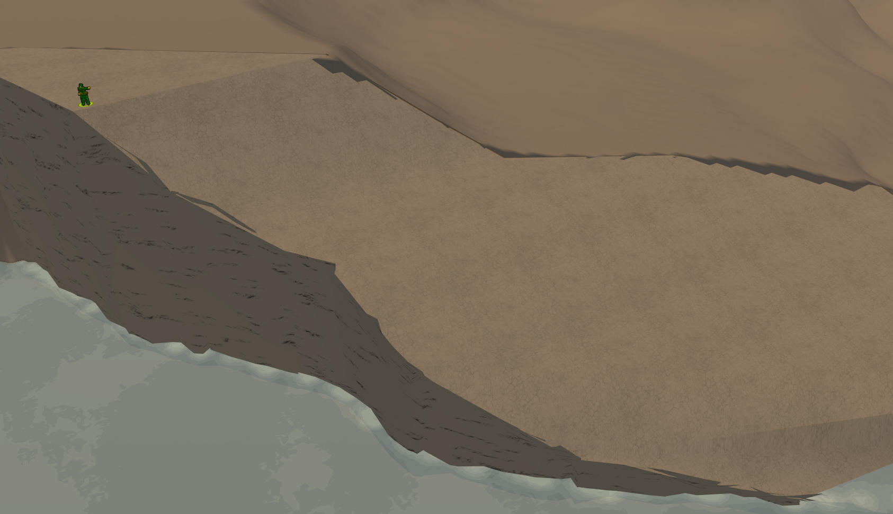

功能介紹¶

地編主界面。
主界面工具¶
Save 說明¶
用來保存地圖，保存完成後會有提示音。
ViewMap 說明¶
生成地圖的初版預覽圖（展開以查看詳細介紹）
點擊後會生成一個名為 map_view_ls.png 的文件，這便是初版預覽圖，其會自動添加一些地圖上的元素，比如據點範圍等，後續在地圖做完後便可根據此圖來進行 地圖縮略圖 的製作。
對的，從之前到現在每個地圖的最終縮略圖都是手搓出來的。
Select 說明¶
用來選擇地圖上的對象（展開以查看詳細介紹）
使用快捷鍵 Shift+1 以快速切換到 Select 工具。
相關交互：
-
左鍵點擊選擇單個對象、Ctrl+Left Button（點擊）或 Left Button（按住拖動）選擇多個對象。
-
按 Esc 鍵取消選擇。
-
按 Del 鍵刪除選擇的目標。
-
按 G 鍵啟用移動模式，此時移動鼠標可將選擇的對象拖走。
-
按 R 鍵啟用旋轉模式，此時移動鼠標可將選擇的對象旋轉至某個角度。
Warning
無法同時選擇多個平臺。
俯視角模式（正交）下會導致部分平臺無法正常顯示與選擇，此時需要切換到飛行模式（透視）來進行選擇。
不建議在飛行模式（透視）下進行移動與旋轉，交互體驗不佳。
PinMan 說明¶
用來在點擊的位置上放置一個虛擬的參照物。（展開以查看詳細介紹）
使用快捷鍵 Shift+2 以快速切換到 PinMan 中的 TankPin 工具。
有三個選項，但只有坦克可用。
WallE 說明¶
用來在列表中選擇各種牆的種類，並使用 PathBush 繪製節點然後按空格自動以擺放順序連成線。既可以先選擇牆的種類後繪製，也可以先繪製然後再選擇牆的種類，選擇後點擊已經畫好的牆即可完成替換。（展開以查看詳細介紹）
使用快捷鍵 Shift+7 以快速切換到 WallE 中的 PathBush 工具。
在搜索欄中可搜索對應名稱來快速選擇對象，每種牆的模型見模型清單 · Wall E。

在用 Select 選中後，可以在這個界面編輯坐標（第一項為 X 軸向右增長、第二項為 Y 軸向下增長，數據為鼠標當前位置坐標的二倍）、使用 Add Point 來在繪製方向增加一條相連的線段、使用叉號來刪除這段節點。

在用 Select 選中多個後，可以在這個界面進行刪除指定對象的操作，Buiding、Mesh 等同理。

在用 Select 選中後，可以在這個界面查看 id、當前層、牆的種類以及設置自定義高度與是否 Merge。
Marge 默認勾選，目的是防止 AI 卡牆翻不過去。
勾選 ReHeight 後，可以自行輸入牆的高度。


BuildingE 說明¶
用來在列表中選擇各種建築物的種類，並使用 DrawBush 按住左鍵拖動來繪製建築物。既可以先選擇建築物的種類後繪製，也可以先繪製然後再選擇建築物的種類，選擇後點擊已經畫好的建築物即可完成替換。（展開以查看詳細介紹）
使用快捷鍵 Shift+3 以快速切換到 BuildingE 中的 DrawBush 工具。
使用快捷鍵 Shift+4 以快速切換到 BuildingE 中的 RoofSwitch 工具。
使用快捷鍵 Shift+5 以快速切換到 BuildingE 中的 BuildingMaterialChanger 工具。
使用快捷鍵 Shift+6 以快速切換到 BuildingE 中的 HeightUp 工具。
在搜索欄中可搜索對應名稱來快速選擇對象，每種建築的模型見模型清單 · Building E。

最上方 HeightDown 與 HeightUp 的作用為改變點擊位置的 Building 高度，每次變化 2（6）。RoofSwitch 的作用為將屋頂變為尖頂/平頂，尖頂方向固定需要選擇建築物後按 R 自行旋轉。

建議先調整完 Height 後再在上方疊加新的對象，上方的對象高度不會隨下方 Building 高度的變化而變化。
在用 Select 選中後，可以在這個界面查看 id、當前層、屋頂是否為尖頂、建築物的種類。
Offset 的作用是設置自定義偏移度（第一項為 X 軸向右增長、第二項為 Z 軸向頂部增長、第三項為 Y 軸向下增長）。

Warning
目前 X 軸無法修改。 如果你想在一個 Building 上面放 Wall、Building、Platform 之類的東西，那麼應該在構思完之後從下往上繪製，繪製的時候需要保證起點在上一個元素之內，這樣所有的對象就都會按照 layer1、layer2… 去逐個疊加，並自動銜接上一個的高度，攀爬等判定也會正常生效。
PlatformE 說明¶
用來在列表中選擇各種平臺的種類，並使用 pathBush 繪製，與 Wall 類似，不再贅述。（展開以查看詳細介紹）
使用快捷鍵 Shift+8 以快速切換到 PlatformE 中的 PathBush 工具。
使用快捷鍵 Shift+9 以快速切換到 PlatformE 中的 TypeChange 工具。
使用快捷鍵 Shift+0 以快速切換到 PlatformE 中的 PlatformBasewallChanger 工具。
搜索欄與 Wall 類似，不再贅述。

最下方的 TypeChange 的作用為讓點擊位置的 Platform 在"無特殊屬性"、"deck 屬性"、"bridge" 屬性之間切換。
ChangeHeight 的操作為在設置完高度後按回車進入工具使用狀態，作用為改變點擊位置的 Platform 高度。

屬性介紹這一塊還沒寫完
在用 Select 選中後，可以在這個界面編輯坐標，方法與 Wall 類似，不再贅述。

在用 Select 選中後，可以在這個界面查看 type、id、當前層、頂部材質、平臺側面牆的種類、平臺上方附加牆的種類、牆的高度。 平臺上方附加牆的種類可以使用 WallE 工具進行更改。 SetMaterial 中添加的值可以是 wood、grass、pavement、terrian。

材質預覽這一塊還沒寫完
如何畫平臺？
以過渡的山崖平臺為例：
我們這次的目的是要從左側的高處用緩坡到達谷底的水中，可以看到在箭頭方向的左側是一個不那麼平 緩的坡，右側則為陡崖，那我們就應該以左側的坡的高度為基準製作一個過度的山崖。

因為繪製平臺時需保證終點邊在起點邊行進方向右邊，同時起點邊為判定高度的邊，所以我們應該先在 箭頭的左側緩坡處，沿着圖一的箭頭方向繪製。


（畫了八個點，如果想讓變化更均勻可以多點幾個）之後按空格，在箭頭右側放置另外對應的八個點，再按 一次空格完成繪製。


之後對平臺進行細緻調整，使其合理。
（藍色點為基準點，也就是第一次畫線生成的點，藍點到粉點之間的連線就是地形的過渡）
（如果你的平臺是紫黑相間的錯誤渲染顏色，那麼恭喜你你放反了，請再次注意繪製平臺時需保證終點邊在 起點邊行進方向右邊）

進遊戲看看~
果不其然做的一坨，可見多加幾個錨點和完善地形的重要性，希望各位引以為戒:(


FuncObjects 說明¶
用來擺放一些有特殊交互的物件。（展開以查看詳細介紹）
LadderScatter 與 LadderEraser 的作用為放置梯子與刪除梯子。放置的梯子會向前自動判定並吸附在旁邊建築物、平臺等等有固定碰撞的東西上。
如果梯子方向放反了會導致吸附失敗無法正常攀爬，並且0101版本的梯子沒有正前方指示，調整時儘量別記混梯子朝向。
ItemSupplyScatter 的作用為放置一個儲藏室或軍械庫的判定區，stash 為儲藏室，weapon_rack 為軍械庫，Select 選中後點擊下方 ChangeType 進行切換。

CrateScatter 與 CrateEraser 的作用為放置木頭箱子與刪除木頭箱子，裡面的物品隨機，無法指定。
SpawnScatter 與 SpawnEraser 的作用為創建復活點與刪除復活點，復活點不宜太靠近地圖邊界。
BaseScatter 的作用為左鍵拖動創建據點，在用 Select 選中後，可以分別更改據點的名字顯示（ Name ）與指定該據點最開始被哪個陣營佔領（ Faction ）。

關於 Faction 的一些說明
不使用Faction那這個據點將會進行隨機分配，填寫整數數字則會按整數的類別進行分配，玩家陣營默認為0號陣營。 如果你設置了地圖裡只有兩個陣營作戰，那麼當 Faction 的值填寫為2時，這個據點將會變成沒有被任何陣營佔領的空白據點。 map13_2 那種為特殊效果，不做介紹。
MeshE 說明¶
用來在列表中選擇各種模型的種類。（展開以查看詳細介紹）
搜索欄與 Wall 類似，不再贅述。

StoneEraser 與 StoneScatter 的作用為刪除一個隨機石頭或放置一個隨機石頭，石頭的樣子見模型清單 · MESH E。
TreeEraser 與 TreeScatter 的作用為刪除一個隨機樹或放置一個隨機樹，樹的樣子見模型清單 · MESH E。

最下方的工具使用方法與 Wall 類似，作用為放置電線杆作為節點，放完後按空格進行按順序的兩兩間電線連線，電線僅為裝飾物，無碰撞。

在用 Select 選中後，可以在這個界面查看 id、種類、碰撞體積（如果是默認則不顯示）。 勾選 ReCollision 後可在上方窗口內更改長、高、寬（以中心為基準）。 offset 的作用是設置自定義偏移度（第一項為 X 軸向右增長、第二項為 Z 軸向頂部增長、第三項為 Y 軸向下增長）。

HeightMap 說明¶
用來鋪設地面的弧度變化。（展開以查看詳細介紹）
HeightBush 的作用為地形刷，左下角界面中的 SetHardness 為硬度，決定着當前刷取地形的高度與背景高度的過渡陡緩，範圍為 0 到 1、SerRange 為地形刷的範圍、SetHeight 為地形刷的高度，範圍為 0 到 1。按 X 橫向鎖定筆刷，按 Y 縱向鎖定。

HeightSmudge 的作用為拖拽鼠標下一定範圍內的高度，並跟隨鼠標移動方向使臨近的地形產生過渡形變。
Smooth 的作用為平緩全圖的地形。
Noise 的作用為對全圖增加地形上的噪音，讓整個地圖不是同一個高度數值的大平地，有些微小起伏。
heightPath 的作用為路徑地形刷，使用方式類似 Wall 工具，相關數據調整左上角均有說明，可自行嘗試。

TerrainBash 說明¶
用來鋪設地面的質地變化。（展開以查看詳細介紹）
Pathpainter 的作用為路徑地面質地刷，使用方式類似 Wall 工具，相關數據調整左上角均有說明，可自行嘗試。 衰減指數用 [ 以及 ] 調整，並不是描述重複打成了 [[/]]。

painter 的作用為地面質地刷，Chg Index 為材質種類，填數字、Chg Rng 為範圍、Chg Har 為硬度。

0101 版本中使用這個工具的時候左下角可能會有個多餘的調節欄，實際沒有任何作用。
Smooth 的作用為平緩全圖的地面質地。
offroadbuilder 說明¶
用來告訴 AI 這條路是開車路線，AI會在開載具時優先往這條路進行尋路，鋪設方法類似 Wall 工具。
Decal 說明¶
用來在列表中選擇各種貼花的種類，可以理解為在地面質地上再印一層材質，選擇後左鍵即可放置。（展開以查看詳細介紹）
deleteDecals 的作用為刪除框選範圍內的貼花。
Select 選中後，可以使用 Length 更改這個貼花的大小，也就是縮放比例。

Assaum 說明¶
用來在列表中選擇各種組件，例如已經製作好碰撞箱和判定區的軍械庫等，選擇後左鍵即可放置。（展開以查看詳細介紹）
搜索欄與 Wall 類似，不再贅述。
如果你想給列表添加你自己的組件，在選擇要組裝的對象之後，通過 Name 進行命名，之後點 Add 即可將你所選的對象組加入組件列表。
Warning
組件不跟隨模板變動，是獨立路徑。 在Add時需要保證對象是多選狀態，如果只選了一個不會進行保存。
ID 搜索說明¶
相關步驟
1.在這看id。

使用 Select 選中對象查看，或直接拆svg找。
Warning
地編每次保存後都會重新排一遍 ID，編號可能和上一次不一樣。
所以記下來的是當時的 ID；隔一次保存再搜，未必還是它。
2.把 ID 填進搜索框之後點右邊的搜索按鈕。

可以看到下面出現小綠字，搜索成功。
一個找id的運用
哎呦我去！RWR剛加載完一半我的地圖就崩潰了？！ 在C:\Users\用戶\AppData\Roaming\Running with rifles路徑下翻翻rwr_game.log，可以看到這次是RWR因為沒法定位到crate_adjusted.mesh，自爆了。

在svg地圖中搜一下這個mesh，發現有兩個相關的static_object。

這裡只展示了一個
再去搜索這倆static_object，哇爆率真的高一下就看到相關id了。

後續就是用id搜索功能給這倆對象從地圖上刪了就完事了
ID 會變
地編每次保存後都會重新排一遍 ID，編號可能和上一次不一樣。 所以記下來的是當時的 ID；隔一次保存再搜，未必還是它。
mapSettings 說明¶
暫無已校驗內容。
待校驗內容。（展開以查看）
| 字段 | 示例 | 備註 | 說明 |
|---|---|---|---|
ambience_alert_day_sound |
ambient_alert_daytime.wavambient_lightrain_alert.wav |
沒試，不知道這是啥 | |
ambience_day_sound |
ambient_daytime.wavambient_lightrain.wav |
白天的背景音效 | |
ambience_night_sound |
ambient_lightrain_night.wav |
晚上的背景音效 | |
day_color |
#e5c685fffill |
任意 16 進制顏色 | 白天的顏色 |
description |
16 bases2 faction king of the hill mapassault map - 11 basesconquest map - 10 basespure pvp map |
可任意填寫，但最 好按格式來 | 地圖描述 |
flip |
-1 |
不知道這是啥，沒試 | |
global_effect |
ambience_alert_day_soundambient_alert_daytime.wavambient_lightrain_alert.wav |
全局效果 | |
name |
Route 666 |
可任意填寫 | 地圖名 |
night_color |
#136395#5f5fc0ffstroke |
任意 16 進制顏色 | 晚上的顏色 |
randomize_faction_index |
01 |
沒試，不知道這是啥 | |
show_base_names_in_map_view |
0 |
不知道這是啥，沒試 | |
starting_day_phase |
0.16 |
戰役開始的時間 | |
visible_in_menu |
01 |
是否在列表可見 |
map settings不寫會導致無法運行地圖，實在不知道寫啥隨便粘貼一個地圖的改吧改吧就得了。
3rdParSettings 說明¶
用來加載細緻模型以及部分材質，可不用。
一、OgreXMLConverter.exe Path 選擇¶
這一步已經在0101版本中內置了，可跳過，展開以查看沒啥用的步驟。
- 點擊 Select，確認
OgreSDK_vc10_v1-7-4.zip解壓到了哪裡，找到它的根目錄。 - 順着
OgreSDK_vc10_v1-7-4\bin\release找到OgreXMLConverter.exe，選中它。 - 基礎設置完成，繼續第二、三步。
二、Mesh files path 選擇¶
-
找到 Steam 上小兵步槍的根目錄。可以在 Steam 界面裡「管理 → 瀏覽本地文件」去定位。
-
順着
RunningWithRifles\media\packages\vanilla找到models文件夾，選中它。 - 點擊 load mesh。

設置完成後效果如下（以 Mesh 為例）：

三、textures path 選擇¶
- 與第二步的第 1 步相同。
- 順着
RunningWithRifles\media\packages\vanilla找到textures文件夾，選中它。 - 點擊 load textures。
設置完成後效果如下（以 Decal 為例）：

RefpM 說明¶
使用 Import 導入參考圖， Clear 移除。 ScaleX 與 ScaleY 的作用為橫向與縱向壓縮或拉長參考圖，值填倍率，例如ScaleX填0.5就是橫向把參考圖壓刀一半。 OffsetX 與 OffsetX其實是Y 的作用為橫向與縱向偏移參考圖，值填距離，第一項為X軸向右增長、第二項為Y軸向上增長。 Alpha 作用為更改參考圖透明度，向左淡化向右軀體化。
交互按鍵表¶
這張表真收錄全了嗎
| 按鍵 | 作用 |
|---|---|
| F5 | 刷新地編界面，以及清理非法元素 |
| Tab | 切換俯視角與自由視角 |
| W A S D | 控制方向 |
| 鼠標滾輪 | 俯視角下調整縮放；自由視角下調整攝影機移動速度 |
| Q E | 自由視角下調整攝像頭高度 |
| Esc | 取消選擇；攝像頭鎖定鼠標 / 鼠標脫鎖 |
| ++shift+數字鍵++ | 快速切換到對應工具 |
| X | 筆刷橫向鎖定 |
| Y | 筆刷縱向鎖定 |
| R | 旋轉選擇的對象 |
| G | 移動選擇的對象 |
| Ctrl+C | 複製對象 |
| Ctrl+V | 粘貼對象 |
| Ctrl+Z | 撤回 |